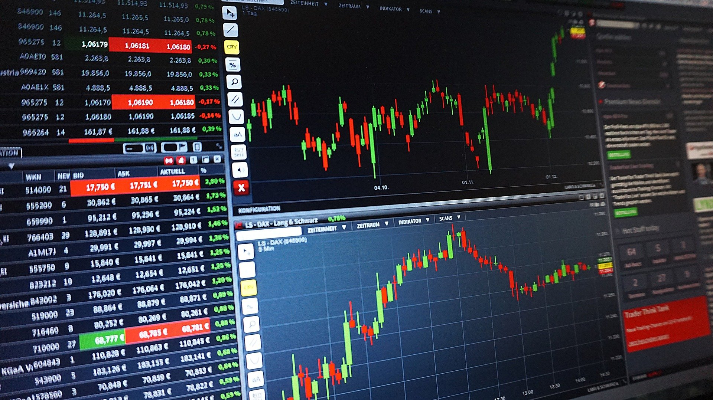

Economical Business News
TOKYO, 2021:The Competition Commission of India (CCI) on Thursday approved the acquisition of Fullerton India Credit Company by Sumitomo Mitsui Financial Group.The proposed transaction involves the acquisition of 100 per cent issued and paid-up equity share capital of Fullerton India Credit Company by Sumitomo Mitsui Financial Group in two steps.Subsequently, Sumitomo Mitsui Financial Group would acquire the remaining 25.1 per cent of the paid-up equity share capital on a fully diluted basis from Angelica."The Proposed Transaction will not lead to any change in the competitive landscape or cause any appreciable adverse effect on competition in India, irrespective of the manner in which the relevant markets are defined," as per the notice.Fullerton India Credit Company is registered as a deposit-taking non-banking financial company.Sumitomo Mitsui Financial Group Inc is the holding company of one of the largest global banking and financial service groups, offering commercial banking, leasing, securities and consumer finance with a heritage exceeding 400 years in Japan, and is one of the globally systemically important banks.The first step would entail the acquisition of Fullerton India Credit Company''s 74.9 per cent of the total paid-up equity share capital on a fully diluted basis from Fullerton Financial Holdings and Angelica Investments, a notice filed with the regulator said."Commission approves acquisition of shares in Fullerton India Credit Company by Sumitomo Mitsui Financial Group," a tweet by the regulator said.
Corporate Business News

BANGLORE, 2021:Karbon Card, a fintech offering corporate cards, has raised $12 million (Rs 88.8 crore) in a Pre-Series A funding round from US-based fintech Unicorn Ramp, Rainfall Ventures, Roka Works, Y Combinator, and other global investors. The startup plans to use the funds to scale its product development, hiring plans and operations as it expects to double its headcount to 60 over the next six months. Founded in 2019 by Pei-fu Hsieh, Amit Jangir, Kartik Jain and Sunil Sinha, Karbon was selected by Y Combinator in the Summer 2021 batch and had earlier raised $3.5 million from Orios Venture Partner and US-based 2AM VC.The Bengaluru-headquartered venture offers start-ups with four key benefits including credit of up to Rs 5 crore with no personal guarantee or fixed deposits, seamless payments transactions through corporate cards, rewards specific to the requirement of the start-ups, while also offering expense management through WhatsApp.The fintech, which makes money mostly from interchange fees, aims to replace the use of personal credit cards for company usage with corporate cards as a personal credit card could affect an individual's credit score apart from creating reimbursement hassles and a mixup of personal and corporate expenses. The start-up has managed to get 1,500 clients in less than two years of its launch, while reporting a 30 per cent month-on-month growth in revenues despite the pandemic that slowed down corporate spending to a large extent. Going ahead, it expects 35 per cent month-on-month growth in the next 8-12 months."We are solving a major challenge faced by Indian start-ups and small businesses while availing corporate cards from the banks that ask for 110% deposit guarantee, personal guarantees and massive amount documentation. Karbon’s corporate cards eliminate all these hurdles and provide solutions in just five minutes," said Karbon’s Co-founder and CEO, Pei-fu Hsieh.
Global Business News
INDIA, Sept 2021:Jim O'Neill is the former chairman of Goldman Sachs Asset Management and former UK treasury minister, notable global economist and chair of UK think tank Chatham House. He coined the acronym BRICS 20-year-ago to represent the emergence and probable rise of economies of Brazil, Russia, India and China. He predicted that by the mid-2030s, the combined GDP of these four countries would be as large as that of the G6 (the G7 minus Canada). In a special interaction with Business Today’s Aabha Bakaya, Jim discussed the US exit from Afghanistan and the resulting impact on global governance. He also spoke about Biden's ambitious plans, China's emergence on the world stage, and what this means for shifting global power dynamics? Here are the edited excerpts.
Aabha Bakaya: Jim, what is going to be the ongoing role of the US economy, and with it, or indeed separately, the role of the US dollar in the world economy and its financial system? The US has maintained such a massive influence throughout the past 50 years, despite the rise of other economies. Now that we’ve seen this massive event, Biden’s withdrawal from Afghanistan, his ambitious stimulus programme, how do you see things changing?
Jim: Dangerous to give too much lasting importance to the role of the Afghanistan mess to the US and the dollar. Based on history, (one) could easily have said the same after Vietnam, Iraq, Libya, and so on. And none of them fancied the role of the dollar in particular, and it is peculiar, given the rise of other economies and the relative decline of the US economy. I would caution viewers about that. Certain long term comparisons are to be made with the demise of pound sterling -- the pound played a role in global finance long after the declining of the UK economy -- so, at some point in the future, the dollar will cease to be as important as it is. And at that point, historians will look back and say it was obvious. And it will probably depend on the ongoing performance of the US economy and the performance of not only the Chinese and EU economy especially, but how policymakers want their financial models to develop. My career has spanned the 50-year-history of Bretton Woods and the reason why the dollar continues to have so much influence is that no one else wants to provide that role. And until that changes, the dollar is going to have that not so economically justified role hanging over global finance, relevant to many places including India.